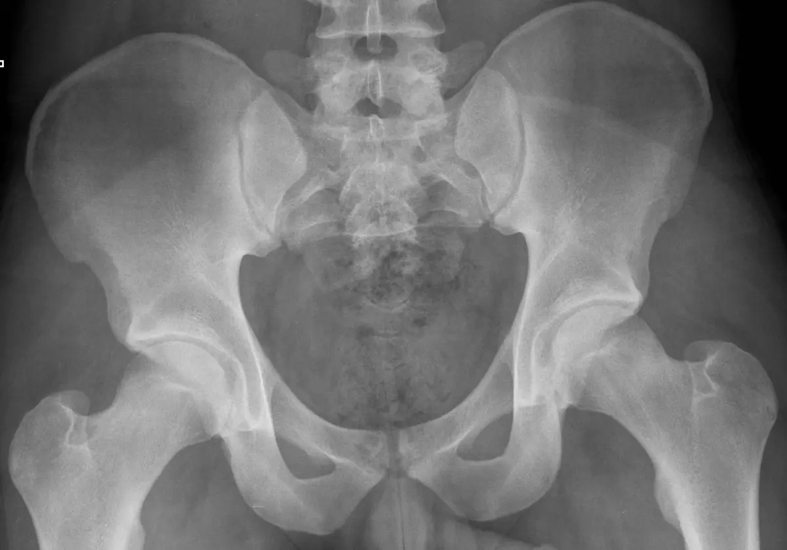
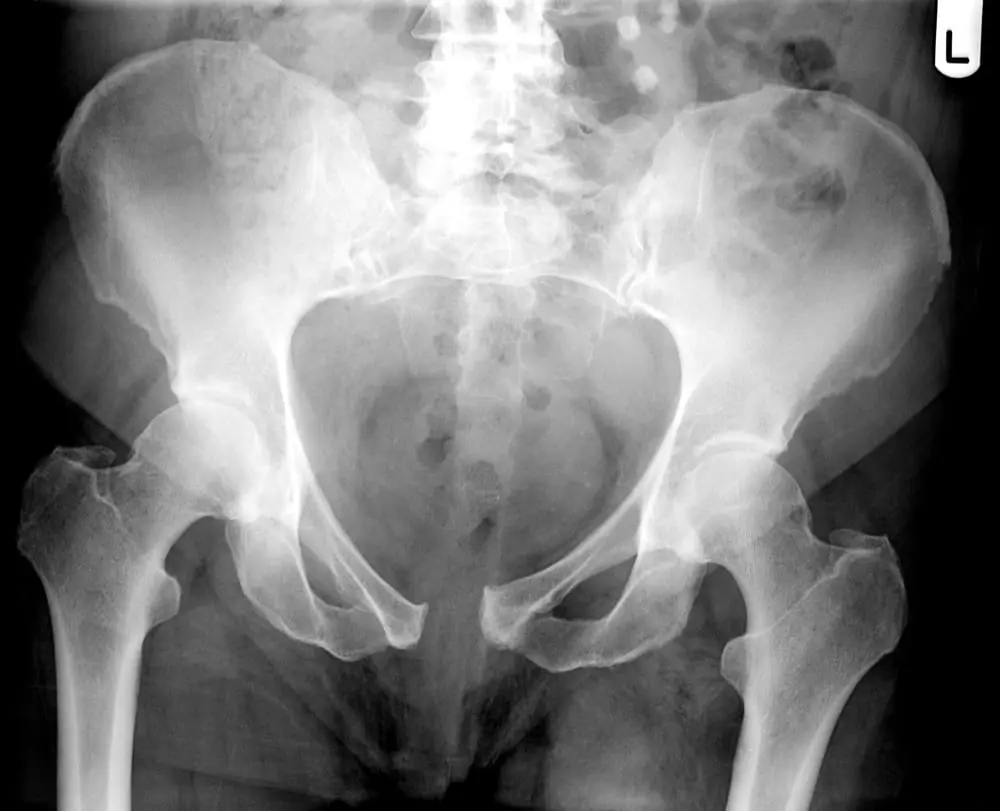

الحلقة الحوضية
تتكون من عظمي الحوض والعجز، مع اتصال أمامي عند الارتفاق العاني.
كسور الحوض تختلف من إصابة مستقرة بعد سقوط بسيط إلى إصابة غير مستقرة قد يصاحبها نزف وإصابات أخرى. تبدأ الرعاية بتقييم السلامة العامة، ثم تحديد ثبات الحلقة الحوضية وخطة التثبيت والتحميل والتأهيل المناسبة.



تتكون من عظمي الحوض والعجز، مع اتصال أمامي عند الارتفاق العاني.
المفاصل العجزية الحرقفية والأربطة الخلفية مهمة لثبات الحلقة؛ إصابتها قد تغير خطة العلاج.
توجد أوعية وأعصاب وأعضاء قريبة، لذلك لا يقتصر التقييم على العظم.
قد يحدث كسر منخفض الطاقة لدى مريض هشاشة، أو إصابة عالية الطاقة بعد حادث. بعض الكسور مستقرة، وبعضها يغيّر اتصال الحلقة ويتطلب تثبيتًا؛ شدة الألم وحدها لا تحدد الثبات.
يمكن أن يترافق الكسر مع نزف أو إصابة في البطن أو المسالك البولية أو الأعصاب. بعد حادث قوي، الدوخة أو الإغماء أو الألم الشديد أو النزف يستلزم تقييمًا إسعافيًا.
ألم الحوض أو الورك وصعوبة الوقوف والمشي شائعة. ضعف جديد أو خدر متزايد أو تغير التبول يجب إبلاغ الفريق به؛ لا يُفترض أنه جزء طبيعي من التعافي.
في الإصابات الكبيرة تُقيّم الدورة الدموية والنزف والإصابات المصاحبة أولًا. تُستخدم وسائل السيطرة على النزف والتثبيت بحسب فريق الإصابات وشدة الحالة.
الأشعة والمقطعية تساعد على فهم الحلقة الأمامية والخلفية وإزاحة العظام. قد تُطلب صور إضافية عند كسور الهشاشة الخفية؛ يختارها الفريق بحسب السؤال التشخيصي.
لا تعني القدرة على تحريك القدم أن الحوض ثابت. يحدد نمط الكسر والأربطة والتثبيت والصحة العامة مقدار التحميل، مع تعليمات مكتوبة للطرفين.
قد يناسب الكسور المستقرة، مع تسكين مناسب ومساعدة على الحركة ووقاية من الجلطات بحسب المخاطر. المتابعة ضرورية للتأكد من عدم زيادة الإزاحة وتحسن القدرة على المشي.
يُناقش عند عدم الثبات أو الإزاحة المؤثرة أو صعوبة الحركة المرتبطة بالكسر في حالات مختارة. يمكن استخدام مسامير أو شرائح أو تثبيت خارجي؛ اختيار التقنية يعتمد على نمط الإصابة والأنسجة.
تُراجع التغذية والهشاشة والتدخين والأمراض المزمنة. قد يحتاج المريض متابعة اختصاصات أخرى عند إصابة المسالك البولية أو الأعصاب أو الأعضاء المجاورة.
لا توجد مدة تحميل واحدة تصلح لجميع كسور الحوض.
تمارين التنفس والدورة الدموية والحركة في السرير والانتقال تبدأ حسب الاستقرار وتعليمات الفريق.
قد يكون كاملًا حسب الألم في بعض الكسور المستقرة، أو محدودًا فترةً في الكسور غير المستقرة أو بعد بعض أنواع التثبيت.
مراجعة الجرح والصور والألم والمشي، مع تقييم هشاشة العظام ومنع السقوط في كسور الهشاشة.
اتبع تعليمات الجرّاح والمعالج لأن ثبات الكسر والتثبيت لا يمكن تقديرهما بالأعراض فقط.
ضيق نفس، ألم أو تورم بالساق، حرارة أو إفراز من الجرح، ضعف أو خدر جديد، أو ازدياد مفاجئ في الألم.
ابدأ التنقل والتمارين المسموحة وفق الخطة، مع وسائل مساعدة مناسبة. لا تغيّر التحميل لأن الألم خف؛ تحسن الألم لا يثبت اكتمال الالتئام.
تراقب الصور الثبات والالتئام، ويُقيّم المشي والألم والأعصاب. ضيق النفس المفاجئ أو ألم الصدر يستدعي الطوارئ؛ ألم الساق وتورمها يحتاج تقييمًا عاجلًا لاحتمال جلطة.
تتراوح كسور الحوض من إصابات مستقرة إلى إصابات عالية الطاقة قد تترافق مع نزف وإصابات أخرى.
لا. بعض الكسور مستقرة ويمكن علاجها دون تثبيت، بينما عدم الاستقرار أو الإزاحة أو إصابات الأنسجة المصاحبة يغير الخطة.
يساعد على تحديد نمط الكسر والإزاحة والعلاقة مع الحُق والمفاصل العجزية، وقد يكون أساسيًا للتخطيط.
تقييم الحالة العامة والدورة الدموية والأعصاب والألم والبحث عن إصابات أخرى، خصوصًا بعد الحوادث عالية الطاقة.
في الكسور المستقرة التي يمكن فيها التحكم بالألم والحركة وتحمل الوزن وفق نمط الكسر وصور المتابعة.
عدم الاستقرار أو الإزاحة المهمة أو عدم القدرة على المحافظة على الوضع قد يدعم التثبيت الجراحي بعد تقييم شامل.
تختلف العودة للمشي والعمل حسب الكسر والتثبيت والحالة الصحية. لا ينبغي زيادة التحميل اعتمادًا على تحسن الألم فقط.
إجابات عملية تكمل الشرح، وتساعدك على مناقشة الخطة مع الطبيب.
لا. كثير من الكسور المستقرة تعالج دون جراحة، بينما عدم الاستقرار أو الإزاحة أو الألم المعطل قد يغير القرار.
يعتمد على نمط الكسر والتثبيت وجودة العظم؛ يعطي الفريق تعليمات محددة للتحميل والمشاية أو العكازات.
كثير من المرضى يتحسنون جيدًا، لكن النتيجة تتأثر بشدة الإصابة والإصابات المصاحبة والعمر والتأهيل.
يُناقش خصوصًا عند حدوث الكسر بعد سقوط بسيط أو لدى الأكبر سنًا لتقليل خطر الكسور اللاحقة.
قد يكون مستقرًا، لكن قد تصاحبه إصابة خلفية غير واضحة. استمرار الألم أو صعوبة الحركة يستدعي تقييم الحلقة كاملة.
الرقود الطويل له مخاطر. يحدد الفريق الحركة الآمنة ومقدار التحميل بدل الراحة المطلقة تلقائيًا.
بعد سماح الفريق بالتحميل المناسب وتحسن القوة والتوازن؛ يتغير التوقيت بحسب الكسر والتثبيت.
بعد كسر منخفض الطاقة، خصوصًا لدى الأكبر سنًا، يفيد تقييم صحة العظم وخطر السقوط لتقليل كسور لاحقة.
قد تتأثر في بعض الإصابات. أخبر الفريق بالأعراض حتى تُقيّم وتُحال للاختصاص المناسب.
ليست الإزالة روتينية؛ تُناقش عند سبب واضح بعد تقييم الالتئام والمخاطر.
كسور الحوض تحتاج قراءة دقيقة لنمط الإصابة واستقرارها والإصابات المصاحبة قبل تحديد الجراحة أو التحميل.
تختلف توصيات الإرشادات بحسب نوع الإصابة ونطاقها. الجرعات والقيود ومواعيد العودة تُفصّل بعد الفحص؛ تُذكر الفوائد المحتملة دون ضمان لنتيجة علاجية.
مصادر الرسوم وتراخيص استخدامها موثقة أسفل كل صورة. مجموعة Bioicons.